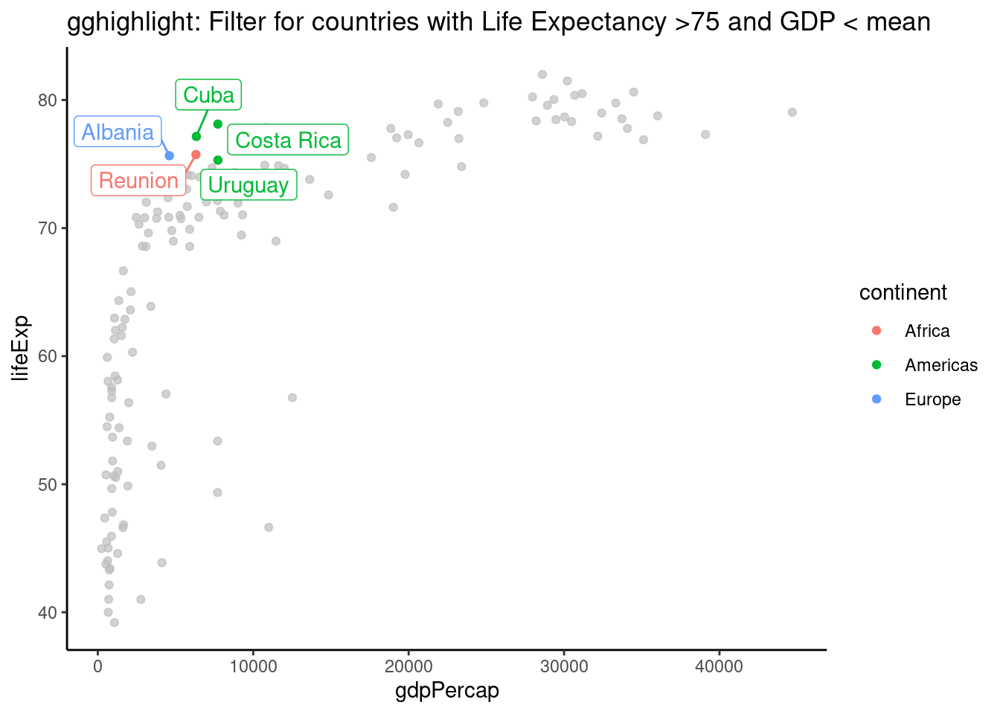
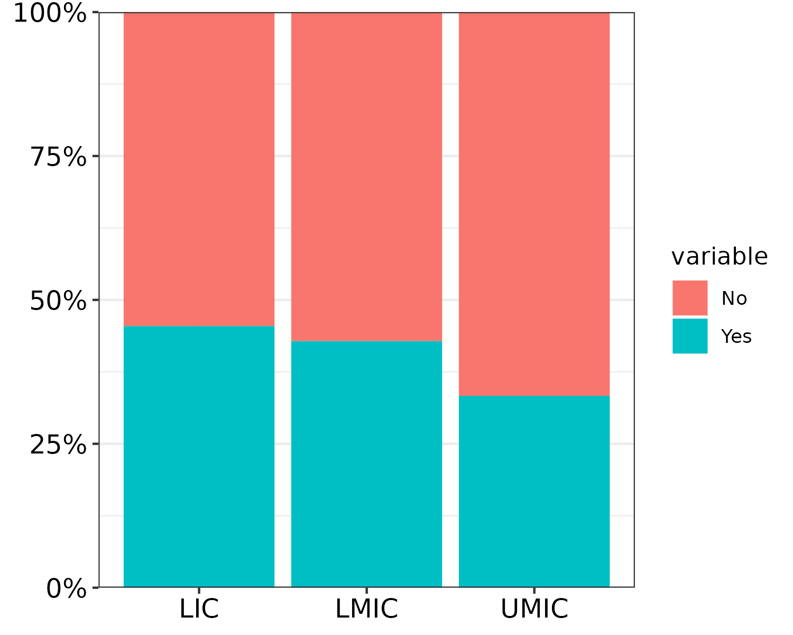

Chapter 6 Plotting
6.1 GGHighlight Example
Plotting with gghighlight is pretty awesome allowing you to filter on any variable. It seems that gghighlight overwrites any ‘colour’ variable you put in the main aes. To get round this and have labels, save as a plot and add geom_label_repel separately.
library(gghighlight)
library(ggrepel)
mydata=gapminder
plot = mydata %>%
filter(year == "2002") %>%
ggplot(aes(x = gdpPercap, y = lifeExp, colour=continent)) +
geom_point()+
gghighlight(lifeExp > 75 & gdpPercap < mean(gdpPercap), label_key = country, use_direct_label = FALSE)+
theme_classic()+
labs(title= "gghighlight: Filter for countries with Life Expectancy >75 and GDP < mean" )
plot + geom_label_repel(aes(label= country), show.legend = FALSE) #only needed if you use use_direct_label = FALSE. This allows you to have a colour legend as well. 
6.2 coord_flip() factor orders
library(ggplot2)
# unflipped (yes this plot has no purpose :)
gapminder %>%
ggplot(aes(x = continent, fill = factor(year))) +
geom_bar() +
scale_fill_brewer(palette = "Paired")# flipped
gapminder %>%
ggplot(aes(x = fct_rev(continent), fill = factor(year))) +
geom_bar() +
coord_flip() +
scale_fill_brewer(palette = "Paired", breaks = rev) +
guides(fill = guide_legend(reverse = TRUE))## This is actually the same as the previous plot so is achieving the aim.
## But the unflipped plot isn't that great given the order of the year
## Hence why wanting to flip
# Better flipped
# This way, new fill levels get added on the end
gapminder %>%
ggplot(aes(x = fct_rev(continent), fill = fct_rev(factor(year)))) +
geom_bar() +
coord_flip() +
scale_fill_brewer(palette = "Paired", breaks = rev, direction = -1)6.3 Axis font size
# OPTION 1: theme(axis.text = element_text(size = 12, colour = "black"))
# OPTION 2: width and height arguments of ggsave()
library(tidyverse)
library(scales)
# made-up example data
mydata = tibble(group = c("UMIC", "LMIC", "LIC") %>% rep(each = 2),
value = 1:6,
variable = c("Yes", "No") %>% rep(3))
mydata %>%
ggplot(aes(x = group, y = value, fill = variable)) +
geom_col(position = "fill") +
scale_y_continuous(labels = percent, expand = c(0, 0)) +
theme_bw() +
# OPTION 1: change font with theme()
theme(axis.text = element_text(size = 12, colour = "black"),
axis.title = element_blank())# OPTION 2: play around with export size. Since PDF will always have max resolution anyway
# but changing width and height modifies text size
mywidth = 5
myheight = 4
#ggsave("barplot_5x4.pdf", width = mywidth, height = myheight)
mywidth = 10
myheight = 8
#ggsave("barplot_10x8.pdf", width = mywidth, height = myheight)Same plot 5x4 inches vs 10x8 inches:

6.4 Shorten Arrows on a DAG
Plot 1 with large nodes and arrows not shortened:
DAG <- ggdag::dagify(y ~ x)
DAG <- ggdag::tidy_dagitty(DAG)
PLOT1 <- ggdag::ggdag(DAG, node_size = 50)
PLOT1
shorten_dag_arrows <- function(tidy_dag, shorten_distance){
# Update underlying ggdag object
tidy_dag$data = dplyr::mutate(tidy_dag$data, slope = (yend - y) / (xend - x), # Calculate slope of line
distance = sqrt((xend-x)^2 + (yend - y)^2), # Calculate total distance of line
proportion = shorten_distance/distance, # Calculate proportion by which to be shortened
xend = (1-proportion)*xend + (proportion*x), # Shorten xend
yend = (1-proportion)*yend + (proportion*y)) %>% # Shorten yend
dplyr::select(-slope, -distance, -proportion) # Drop intermediate values
return(tidy_dag)
}
DAG <- shorten_dag_arrows(DAG, shorten_distance = 0.1)
PLOT2 <- ggdag::ggdag(DAG, node_size = 50)
PLOT2